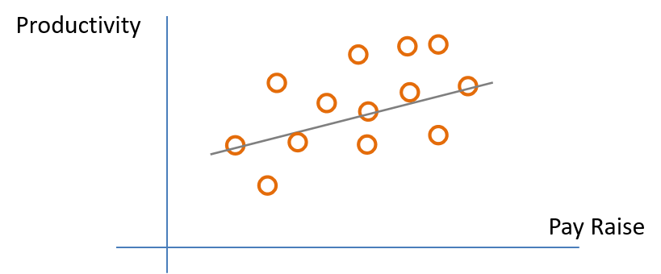
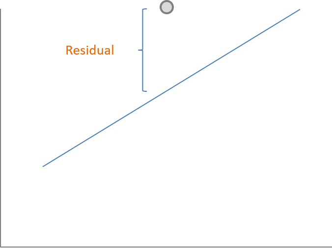
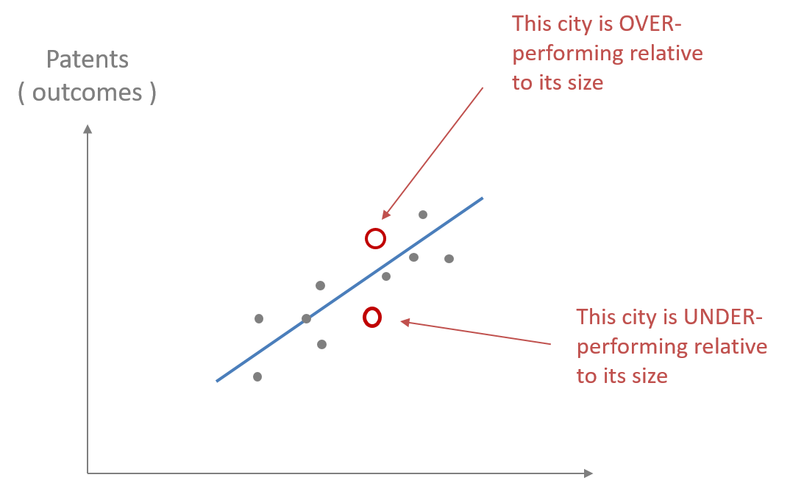
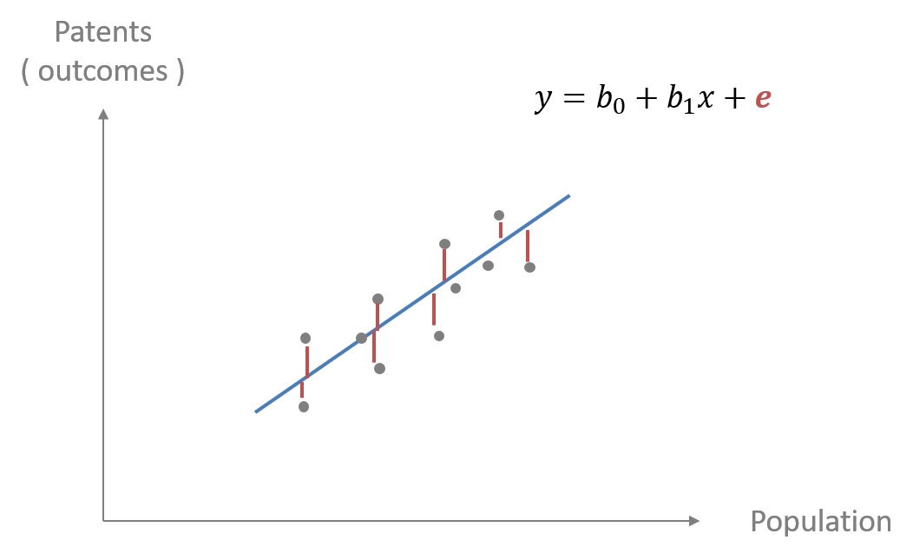

Chapter 4 The Regression Residual
Viewing The Regression Line As A Conditional Average
In statistics, conditional basically means if you know the value of one variable you either know or can estimate the value of another variable. In other words, if you tell me the level of \(x\), I can tell you the average \(y\) for someone with that level of \(x\). In terms of the regression x is the value of the input or independent variable of a program and \(y\) is the outcome or dependent variable of the program. Therefore, \(y\) is dependent or conditional on \(x\).
4.1 Regression Residuals And Errors
Recall the example of pay raise and productivity. In the real wold people vary. The regression line gives us the best linear fit or prediction of what productivity or \(y\) will be if we know the pay raise or \(x\). Therefore \(y\) is conditional on \(x\). However, the true values of productivity conditional on each person’s productivity varies by person and therefore varies around the regression line instead of being perfectly on it. (Fig. 4.1)
Fig. 4.1 
As in Fig. 4.1, the data will cluster around the regression line, but not on it. The residual is calculated from the actual value of \(y\) minus the predicted value of \(y\) or \(\hat{y}\), which is a point on the regression line. (Fig. 4.2)
4.2 The Residual In Regression
Fig. 4.2 
4.2.1 Interpreting And Using The Residual In Regression
The regression line tells us our best linear estimate of \(y\) conditional on \(x\). This can also be said as \(y\) given \(x\), which is represented mathematically as \({y|x}\). However, because the actual data usually cluster around the regression line each data point likely has a regression residual.
The regression residual can be either positive or negative. In other words, some data points will be above the regression line leading to a positive residual and some data points will be below the regression line leading to a negative residual.
A good example of residuals in regression is “The Math of Cities”. This example is based on data from the Census. It basically shows that the size of the city is related to productivity. For this study they used the number of patents as a measure of productivity. This is reasonable because it is a measure of ingenuity and the creation of new ideas and products. To listen to the researchers go to https://www.wnycstudios.org/story/96043-its-alive/ and listen to the time 12:30-17:30.
4.2.2 How The Residual Describes Over-performing and Under-performing
Let us consider the example of “The Math of Cities”. What does it mean to be over-performing or under-performing relative to city size? If a city over-performs relative to the regression line the number of patents or productivity will lead to a positive residual. If you under-perform relative to the regression line the number of patents or productivity will lead to a negative residual. Fig. 4.3 shows the regression line and how some cities are above the line and over performing and some below and under-performing.
Fig. 4.3 
As we have noted residuals can be positive or negative, and reflect over-performing and under-performing in “The Math and Cities” example. Fig. 4.4 shows the residuals represented by the red line connecting each data point and the regression line. These red vertical lines represent the distance between the data points and the regression line. The positive residuals are the the red lines above the regression line and the negative residuals are the red lines below the regression line. \({e}\) in the regression equation represents the error or the regression residual.
Fig.4.4

4.3 How Do We Know The Best Fitting Regression Line For Our Data
Finding the best fitting regression line uses mathematics that can be calculated by hand. Luckily computers identify the regression line based upon the criteria of “line of best fit” for the data. In most cases, this means that we are finding the line that minimizes the distance between the line and all data points, i.e. minimizing the error in the model. These errors are the red lines representing the regression residuals (Fig. 4.4).
4.3.1 The Calculation Of The Regression Line
Calculating the regression line and slope coefficients must find the best fitting line. Therefore, it would be a better fit if there is minimum error or residuals for the entire set of data points. Just as we did with the variance, we could not use the absolute error, but rather we squared the deviations from the mean. To calculate the regression line we will also need to square the error or residuals.
Eq. 4.1 shows the regression line that we have studied previously. This equation has a subscript \({i}\) for \({x}\) and \({y}\). This subscript represents each data point. Therefore, we have a specific value for each \(y_{i}\) or the dependent variable and for each \(x_{i}\), which is taken directly from data that was collected.
Eq. 4.1
\(y_{i} = B_{0} + B_{1}x_{i} + e_{i}\)
To calculate the best fitting regression line we must minimize the error for the entire data set. Therefore, we will minimize the sum of squared errors or residuals. With a little algebra Eq. 4.1 can be rearranged to give you the equation in terms of the error term/residual with it on the left side of Eq. 4.2. This is essentially solving for the error term \({e}\). The next step is to sum the squared errors/residuals of each data point. This is shown in Eq. 4.2.
Eq. 4.2
\(e_{i} = y_{i} - B_{0} - B_{1}x_{i}\)
Eq. 4.3
\(\Sigma(e_{i} = y_{i} - B_{0} - B_{1}x_{i})^2\)
The next step is to minimize Eq. 4.3 or the sum of squares of the residuals. This requires calculus and is beyond the scope of this course. Once Eq. 4.3 is minimized you can calculate the intercept and slope coefficients of the regression line \(B_{0}\) and \(B_{1}\). This is called the ordinary least square regression or OLS. Statistical packages, such as R and others, can give you the OLS regression line.
4.3.2 Implications Of Squaring Residuals
Using sum of squares in both variance and calculating regression lines has important consequences in regard to misinterpreting the meaning of the sum of squares. If we think back to the variance and standard deviation of the mean, because the variance is in terms of squared deviation each unit of increase in the data leads to a squared difference. This leads to an increasingly larger increase in variance for each unit a data point is from the mean.
Her are examples of squared deviations leading to misinterpreting the absolute deviations. These are the results of squaring each deviation from the mean. If a data point deviates \(1\) point from the mean then \(1^2\) is \(1\). If a data point is \(2\) units from the mean then \(2^2\) is \(4\). If a data point is \(3\) units from the mean then \(3^2\) is \(9\). This leads to the squared deviations from the mean increasing much more quickly than the absolute deviations. In this example we can see this by noticing \(2^2\) being \(4\) times a deviation of \(1\) and \(3^2\) being \(9\) times a deviation of \(1\). The solution was to take the square root to put the squared units into the same units as the original data. This is the same with the squared residuals. This is important when considering outliers. Outliers using squared residuals can have an extreme effect on the analysis.
The Regression Line Passes Through Both The Mean Of Y And Mean Of X
Once the sum of the squared residuals is minimized to calculate the regression line the results give the equation for the intercept \(B_{0}\) (Eq. 4.4) and the equation for the regression slope \(B_{1}\) (Eq. 4.5). Remember that the “hat” over the \(B's\) represent the fitted or estimates and the “bar” over \(x\) and \(y\) represent the mean. This will imply that the regression line passes through the mean of \(x\) and the mean of \(y\).
4.4 The Regression Coefficient Equations Estimates
Eq. 4.4
\(\hat{B_{0}} = \bar{y}-\hat{B_1}\bar{x}\)
Eq. 4.5
\(\hat{B_{1}} = (\Sigma(x_{i}-\bar{x})({y}_{i}-\bar{y}))/(\Sigma(x_{i}-\bar{x})^2\)
4.5 Looking Forward
We will explore the regression slope further.
We will discuss how there is variability and a standard error of the regression slope as there is with the mean.
We will also discuss how variables vary together, which can be measured by the covariance.